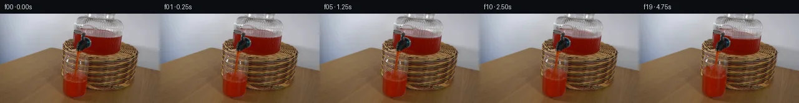

![首帧]()

Round 00
2026-11-05T02:29:56.211123+00:00像素候选变化代码 +185/−0inspection 更新
pixels 9c14a2bf86d01660 · code 6b37de1656b238a8
查看本轮 generate.py 真实 diff
--- previous/generate.py
+++ current/generate.py
@@ -0,0 +1,185 @@
+"""Local photographic pixel continuation. No models, renderer, or image viewer."""
+from pathlib import Path
+import json
+
+import numpy as np
+from PIL import Image, ImageDraw
+from scipy.ndimage import gaussian_filter, gaussian_filter1d, map_coordinates
+
+from artifact_io import save
+
+ROOT = Path(__file__).resolve().parent
+W, H, N, FPS = 256, 144, 20, 4
+SOURCE = np.asarray(Image.open(ROOT / 'first_frame.png').convert('RGB'))
+PLATE = SOURCE.astype(np.float64)
+Y, X = np.mgrid[:H, :W].astype(float)
+
+
+def smooth(a, b, v):
+ q = np.clip((v - a) / (b - a), 0.0, 1.0)
+ return q * q * (3.0 - 2.0 * q)
+
+
+def sample(rgb, yy, xx):
+ return np.stack([
+ map_coordinates(rgb[..., c], [yy, xx], order=1, mode='nearest')
+ for c in range(3)
+ ], axis=-1)
+
+
+def mix(a, b, mask):
+ return a + (b - a) * mask[..., None]
+
+
+# Numerically measured centre of the original stream; smoothing retains its
+# gentle leftward path while removing one-pixel sampling fluctuations.
+stream_ys = np.arange(61, 96)
+centres = []
+for sy in stream_ys:
+ xs = np.arange(118, 129)
+ weights = np.maximum(PLATE[sy, xs, 0] - PLATE[sy, xs, 1] - 65, 0)
+ centres.append(float(np.sum(xs * weights) / np.sum(weights)))
+centres = gaussian_filter1d(np.asarray(centres), 0.8)
+C = np.interp(Y, stream_ys, centres)
+stream_distance = X - C
+stream_gate = (1 - smooth(1.0, 2.9, abs(stream_distance)))
+stream_gate *= smooth(59.5, 62.5, Y) * (1 - smooth(96, 101, Y))
+stream_chroma = smooth(47, 85, PLATE[..., 0] - PLATE[..., 1])
+stream_mask = stream_gate * stream_chroma
+
+# The receiving glass's borders and bottom remain fixed. Map liquid texture
+# into the taller filled section, with the foot anchored at y=133.
+cup_side = smooth(100, 102.5, X) * (1 - smooth(137.5, 140, X))
+cup_foot = 1 - smooth(130, 134, Y)
+cup_vertical_gate = smooth(78, 84, Y) * (1 - smooth(132, 135, Y))
+
+# Smooth reservoir colour is moved; photographic surface detail is retained
+# at its original location so the reflections do not slide with the water.
+reservoir_low = gaussian_filter(PLATE, sigma=(0.8, 0.6, 0))
+reservoir_detail = PLATE - reservoir_low
+reservoir_x = smooth(143, 149, X) * (1 - smooth(191, 195.5, X))
+reservoir_y = smooth(22, 26, Y) * (1 - smooth(42, 47, Y))
+reservoir_mask = reservoir_x * reservoir_y
+
+
+def make_frame(k):
+ if k == 0:
+ return SOURCE.copy()
+ time = k / FPS
+ progress = k / (N - 1)
+ rise = 12.0 * progress
+ ramp = smooth(0, 0.55, time)
+ frame = PLATE.copy()
+
+ # A small reservoir decline, tapered away from the moving upper surface.
+ drain = 3.2 * progress
+ reservoir_shift = drain * (1 - smooth(38, 48, Y))
+ displaced = sample(reservoir_low, Y - reservoir_shift, X)
+ frame = mix(frame, displaced + reservoir_detail, reservoir_mask)
+
+ # Deform the photograph only within the flowing strand. Subpixel lateral
+ # changes and advected red glints give a continuous, narrow gravity jet.
+ fall = np.clip((Y - 61) / 34, 0, 1)
+ sway = ramp * 0.20 * fall * (
+ np.sin(0.29 * Y - 7.0 * time) + 0.35 * np.sin(0.43 * Y - 3.1 * time)
+ )
+ jet_pixels = sample(PLATE, Y, X - sway)
+ highlight = ramp * (3.4 * np.sin(0.76 * Y - 16.1 * time)
… diff truncated; 98 more lines …